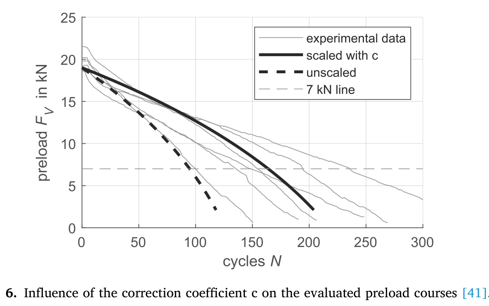
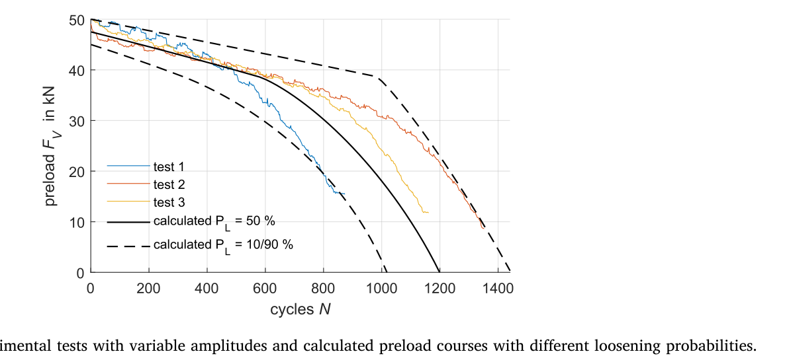

Bauer 2024 — estudo de caso— case study
M8/M12, bancada EFA de auto-afrouxamento (espectro de amplitude)M8/M12, EFA self-loosening rig (amplitude spectrum)
Figura do artigoPaper figure


Figura(s) originais do artigo (recorte do PDF) — a fonte dos pontos que foram digitalizados.Original figure(s) from the paper (PDF crop) — the source of the digitized points.
Condições do ensaioTest conditions
| ReferênciaReference | Bauer et al. (2024). Eng. Fail. Anal. 162:108404 · doi:10.1016/j.engfailanal.2024.108404 |
| ParafusoBolt | M12x1.5, M8x1.25 |
| Pré-carga F0Preload F0 | 20–50 kN |
| AmplitudeAmplitude | ±0.07–0.08 mm |
| FrequênciaFrequency | 12.5 Hz |
| Família / nº de curvasFamily / curves | transverse · 9 |
| MAE medianomedian | 0.042 |
Informações do artigo — aparato, corpo-de-prova, matriz de ensaiosPaper information — apparatus, specimen, test matrix
Bauer 2024 (Eng. Fail. Anal.) — accumulation of preload loss, M8 + M12x1.5
Citation: Bauer et al. (TU Darmstadt), "Method of accumulation of preload loss of bolted joints due to rotational self-loosening caused by cyclic, transversal excitation", *Engineering Failure Analysis* 162 (2024) 108404. DOI: 10.1016/j.engfailanal.2024.108404 (open access CC BY-NC-ND, TUprints) PDF: pdfs_open_access/bauer2024_efa.pdf (= BAS_V2_papers/A.../Method of accumulation of preload loss...pdf)
Apparatus
- Junker-type transverse-displacement test rig (DIN 65151 family), displacement-controlled;
the controlled quantity is the local relative displacement s_a,E at the interface (not machine stroke) — measured close to the joint.
- Continuous preload F_V measurement via load washer; run-out 20,000 cycles; loosening
typically completes in <1,000 cycles once slip exceeds critical.
- Excitation frequency given only symbolically (s(t)=s_a·sin(2πf·t)) — no numeric Hz.
- Headline result: critical local slip amplitude **s_crit ≈ 76–108 µm (99 µm at
P_L = 50%)** below which rotational self-loosening does not initiate; boundary curves (amplitude vs cycles-to-25%-loss) built from test families — those S-N-style curves are NOT digitized (not F/F0-vs-N data).
Specimen
- M8 bolts, clamp length l_K = 8 mm, F_M = 20 kN (Fig 6 family, s_a,E ≈ 70 µm).
- M12×1.5 (fine pitch), l_K = 12 mm, F_M = 35 / 50 kN (Fig 8 family, spectrum
excitation ≈ 80 µm base with ~150 µm peaks).
Trial matrix (digitized)
| CSV | Bolt | F_M | Excitation | Shape |
|---|---|---|---|---|
| bauer2024_M8_fig6_rep1..rep6.csv (6) | M8 | 20 kN | constant ~70 µm | quasi-linear decay to near-zero, <1,000 cyc |
| bauer2024_M12_fig8_test1..test3.csv (3) | M12x1.5 | 50 kN | variable spectrum 80/150 µm | 3-stage: slow → accelerating → steep collapse knee |
(CSVs were digitized by a subagent from 8x-zoom renders of Figs 6 and 8; 15–27 pts each.)
Digitization caveats
- Fig 6 reps show specimen scatter (start values 0.93–1.08 after normalization — tightening
scatter); treat reps as an ensemble.
- Fig 8 x-values start at ~26 cycles (log-ish early sampling of the render); knee position
varies per test (F_V ≈ 35–40 kN when the collapse accelerates).
- Normalized by F_M (20 / 50 kN).
V2 calibration mapping
- Fig 8 = best independent 3-stage collapse target for
surface_damageD (same shape
as reaperto/TP7): slow decay until amplitude-vs-preload criticality, then knee and steep collapse as falling F_V drops the critical amplitude below the spectrum base.
- Fig 6 quasi-linear family →
k_loose_scale_tr/Phi_tr_correctionat a new size (M8). - s_crit = 99 µm is a direct physical anchor for
slip_onset_W(not just curve shape). - Cross-validation across F_M = 20/35/50 kN and M8 vs M12.
Modelo vs dadoModel vs data
Cada card = uma curva digitalizada deste estudo: a linha é a previsão do modelo (config adotada, do store canônico) e os pontos são o dado medido; o badge traz o MAE.Each card = one digitized curve from this study: the line is the model prediction (adopted config, from the canonical store) and the dots are the measured data; the badge shows the MAE.
ReprodutibilidadeReproducibility
Cada card tem ↓ CSV (modelo + dado da curva). Os CSVs digitalizados originais ficam em Models/CALIBRATION_AND_VALIDATION/curve_library/digitized_csv/; a curva do modelo vem do store canônico (config adotada por fonte). Para reproduzir localmente:Each card has ↓ CSV (curve model + data). The original digitized CSVs live in Models/CALIBRATION_AND_VALIDATION/curve_library/digitized_csv/; the model curve comes from the canonical store (adopted per-source config). To reproduce locally:
Ver também o guia de uso do programa e a metodologia.See also the program usage guide and the methodology.